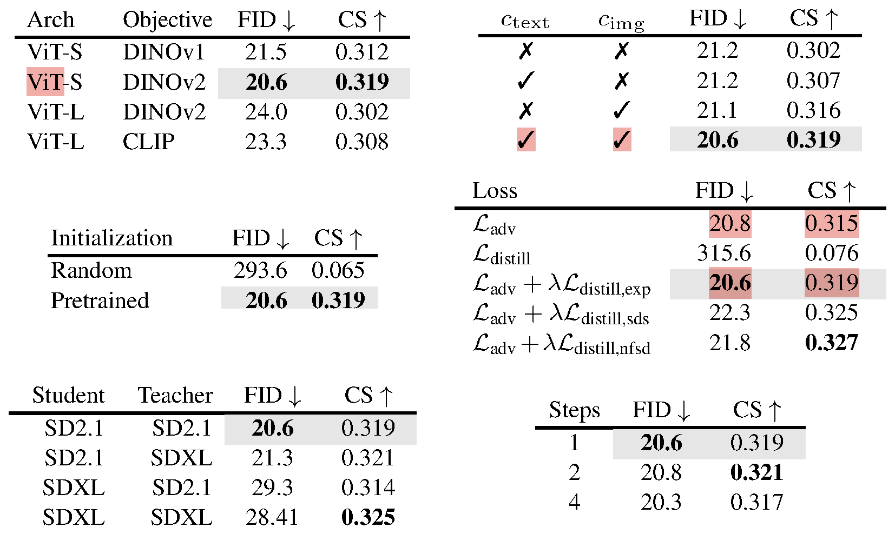
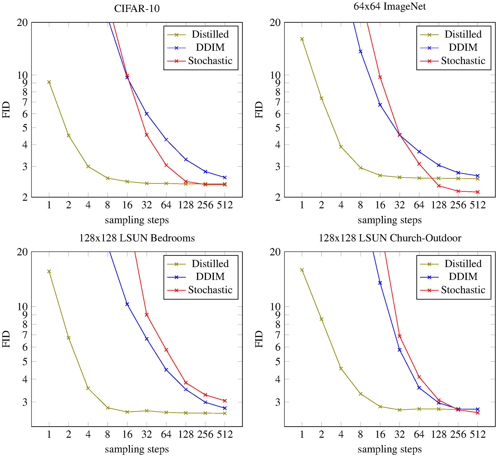

Efficiency & Systems
Making training and inference fit the compute you actually have.
7 papers
Written by Junkun Yuan.
Click here to go back to main contents.
Table of contents ▶
Papers are displayed in reverse chronological order. High-impact or inspiring works are highlighted in red.
Distillation
Improved Distribution Matching Distillation for Fast Image Synthesis
MIT · Adobe Research
Advances in Neural Information Processing Systems (NeurIPS), 2024
May 23, 2024 DMD2 (622) code (1.4K)
It frees DMD from its regression loss, adds a GAN head trained on real images, and lets a few-step student beat its own teacher.

-
What the regression loss cost (§3). DMD stabilized training by regressing the student onto precomputed teacher ODE pairs: about 700 A100-days of pairs for SDXL — over 4x DMD2's whole training budget — and a leash to the teacher's sampling paths that caps it at teacher quality.
-
Two time-scale update rule (§4.2). Drop it naively and stability goes too — brightness oscillates — because tracks the generator's shifting output too loosely. Five fake-score updates per generator update restore DMD's ImageNet FID, 3.48 to 2.61, with no paired data.
-
A GAN head on the fake score (§4.3). What remains is the teacher's approximation error, unfixable while the student never sees real data. A classifier on 's mid-block judges noised real vs. fake (Eq. 4): 2.61 to 1.51, then 1.28 trained longer — past the teacher itself.
-
Multi-step generator (§4.4). Four timesteps, 999/749/499/249, identical at training and inference; sampling alternates denoising with re-noising. SDXL is the motivation: one step cannot carry the noise-to-megapixel map — its one-step model kept a 10K-pair warmup (App. J.4).
-
Backward simulation (§4.5). Earlier multi-step students train on noised real images, yet from step two onward inference feeds them their own outputs. DMD2 makes training inputs by running the student itself — cheap at few steps — and SDXL patch FID falls 24.21 to 20.86.
-
One loop, three players (Alg. 7). Every iteration updates the fake score and discriminator; every fifth, the generator, on matching gradient plus weighted GAN loss. Neither half suffices alone: pure GAN gets 2.56. One-step SD v1.5: COCO FID 8.35, past its 50-step teacher.

Fast High-Resolution Image Synthesis with Latent Adversarial Diffusion Distillation
Stability AI
SIGGRAPH Asia, 2024
Mar 18, 2024 LADD (307)
Distillation goes fully latent — the teacher generates the training data, its features judge real from fake, and the distillation loss goes obsolete.

-
What ADD paid for pixels (§3). ADD decodes latents back to images for both of its losses — a DINOv2 discriminator and a pixel-space distillation term — which costs memory and caps resolution. LADD never leaves the latent space, and megapixel multi-aspect synthesis follows.
-
The teacher becomes the discriminator (§3). Generated latents are re-noised at a logit-normal and fed through the frozen teacher; discriminator heads sit on the token sequence after every attention block of the teacher itself, conditioned on noise level and pooled CLIP text.
-
Synthetic data retires the distillation loss (§4.2). Training images come from the teacher at one fixed CFG scale, so image-text alignment is uniformly high; on them an added distillation term — which still helps real data — buys nothing, and the adversarial loss alone suffices.
-
Scaling, then the product (§4–5). In the three-way scaling study the student's size matters most; LADD distills the 8B MMDiT into SD3-Turbo — megapixel multi-aspect images in four unguided steps that match state-of-the-art text-to-image models, with DPO layered on top.
One-step Diffusion with Distribution Matching Distillation
MIT · Adobe Research
Conference on Computer Vision and Pattern Recognition (CVPR), 2024
Nov 30, 2023 DMD (990)
It first brought score-difference distribution matching into the diffusion distillation pipeline — a design since widely adopted across the industry's fast generators.
It distills a diffusion model into a one-step generator by matching distributions, not trajectories — the signal is a difference of two scores.

-
One-step generator (§3.1). The teacher predicts a clean image from one noised to step of . Copy its weights, drop the time input and pin it at the noisiest step: . Untrained, it outputs a washed-out average, but already maps noise to image.
-
Distribution matching objective (Eq. 1). Match the two image distributions, not the teacher's noise→image mapping: . Reverse KL, so mode-seeking — a bill paid later. Ablated: 2.62 → 9.21.
-
The gradient is what trains (Eq. 2). Densities are intractable, the gradient is not — a difference of scores : . Borrowed from ProlificDreamer, which optimizes one output at a time; DMD optimizes a generator.
-
Diffusing before scoring (Eq. 3). Neither score exists where the two distributions miss each other, so the generator's output is re-noised on the teacher's own schedule, , at a random . This is why both scores below take as an argument.
-
Frozen real score (Eq. 4). The teacher, frozen and read as a score: — the prediction minus the input, scaled, because a trained denoiser is a score estimator. It never moves, so is whatever the teacher learned, whose ceiling is DMD's.
-
Learned fake score (Eq. 5–6). The same formula over a second copy , retrained continually on the generator's own output by plain denoising, tracking a distribution that moves as the generator learns. GAN-like, two nets chasing — but no discriminator, no minimax.
-
Gradient weighting (Eq. 8). Scales that gradient so its magnitude is comparable across noise levels, using the teacher's own error on the sample. It reads like a footnote and is worth ~1 FID: DreamFusion's and ProlificDreamer's weightings give 3.60 / 3.71 on CIFAR-10, against 2.66.
-
Regression loss (Eq. 9). LPIPS against noise–image pairs sampled from the teacher's ODE solver, at under 1% of the compute. Needed because a score ignores rescaling of : mode dropping is a fixed point, not an instability. Ablated: 2.62 → 5.61; DMD2 drops it.
-
Alternating update (Alg. 1). on , unpaired samples for the first and paired for the second; on denoising, one update each per step. Three networks resident at once — the memory limit the paper names, and which it suggests LoRA could one day relieve.
-
Classifier-free guidance (§3.4). The pairs and come from the guided teacher, is left alone; the scale is baked in, so no CFG knob.
The algorithms and their code. DMD was never released, so this is
DMD2's edm_guidance.py, condensed — but the distribution-matching core is untouched:
is Algorithm 2 exactly.
DMD2's GAN loss and its 5:1 update rule both live elsewhere in the same file.


weighting_factor "diverges slightly" from Eq. 8, reading to suit a network that predicts the mean, not the noise.# Line 2: three copies of the teacher, two trainable.
generator = copy(real_unet) # G, one step
fake_unet = copy(real_unet) # mu_fake, Eq. 5
real_unet.requires_grad_(False) # mu_real, Eq. 4
min_step, max_step = int(0.02 * T), int(0.98 * T)
for _ in range(iters): # line 3
# Lines 5-7: one forward pass, no sampler loop.
z, (z_ref, y_ref) = randn(B, C, H, W), next(pairs)
latents, x_ref = generator(z), generator(z_ref)
if dataset == "laion":
latents = cat([latents, x_ref])
# Line 10 calls Alg. 2, inlined from here down.
with torch.no_grad():
t = randint(min_step, max_step + 1)
sigma = karras_sigmas[t]
noisy = latents + sigma * randn_like(latents)
# Eq. 4 is frozen; Eq. 5 is still learning.
p_real = latents - real_unet(noisy, sigma, labels)
p_fake = latents - fake_unet(noisy, sigma, labels)
# Eq. 8, and then the objective itself.
weight = p_real.abs().mean([1,2,3], keepdim=True)
grad = (p_real - p_fake) / weight
# A carrier, not a loss: differentiating it hands
# `grad` straight to the generator.
target = (latents - grad).detach()
loss_dm = 0.5 * F.mse_loss(latents, target)
# Lines 11-13.
loss = loss_dm + lambda_reg * lpips(x_ref, y_ref)
loss.backward(); opt_g.step(); opt_g.zero_grad()
# Lines 16-19: the fake score, refitted to the
# generator's own samples over the full range of t.
x = latents.detach() # no path back to G
sigma = karras_sigmas[randint(0, T)]
noisy = x + sigma * randn_like(x)
pred = fake_unet(noisy, sigma, labels)
w = snr + 1 / sigma_data**2 # Eq. 6
loss_fake = (w * (pred - x) ** 2).mean()
loss_fake.backward(); opt_fake.step()Adversarial Diffusion Distillation
Stability AI
European Conference on Computer Vision (ECCV), 2024
Nov 28, 2023 ADD (848) code (27.3K)
It first brought the adversarial loss into diffusion distillation — shipped as SDXL-Turbo — opening the GAN-assisted route that turbo-class generators still follow.
An adversarial loss keeps single-step samples sharp while score distillation keeps them faithful to the teacher — SDXL-Turbo, real time at one step.


-
Three networks (§3.1). A student initialized from the pretrained UNet denoises at just timesteps with and zero terminal SNR, so the pure noise inference starts from stays in-distribution; a frozen teacher and a discriminator complete the training triangle (Fig. 1).
-
The adversarial half (§3.2). StyleGAN-T's recipe: frozen DINOv2 features, lightweight trainable heads, hinge loss with an R1 penalty on head inputs; the discriminator is projection-conditioned on the text — and, when , on the clean behind the student's noised input.
-
The distillation half (§3.3). The frozen teacher denoises a re-noised copy of the student's output — raw generations would be out-of-distribution for it — and the student regresses onto that under stopgrad: score distillation, computed in pixel space for the stabler gradients.
-
No guidance at inference (§3–4). CFG distills into the weights, cutting memory; one step beats LCM-XL and the single-step GANs, and at four steps ADD-XL outruns its own SDXL teacher in human preference — the first foundation-scale model running in real time at 512px.
On Distillation of Guided Diffusion Models
Stanford · Stability AI · Google Research, Brain Team
Conference on Computer Vision and Pattern Recognition (CVPR), 2023
Oct 06, 2022 CFG Distill (854)
It first made classifier-free guidance distillable by conditioning the student on the guidance scale — a -embedding now standard equipment in few-step generators.
It makes classifier-free guidance distillable — fold the two-model combination into a guidance-conditioned student, then progressively distill it.
-
Why guidance resists distillation (§2). Classifier-free guidance runs two networks per step and mixes their outputs, ; the scale is a quality–diversity knob for the user, so a student has to cover a full range of guidance strengths rather than any single point of it.
-
Stage 1 folds the pair into one network (§3.1). A student regresses onto the guided mix with , the scale entering via Fourier embedding, like timestep; weights start from the teacher's conditional half. Range-training is free — it matches fixed-scale students (Tab. 1).
-
Stage 2 is PD, carrying along (§3.2). The merged model then walks progressive distillation's ladder unchanged — halve, re-teach, repeat — with v-prediction throughout. On pixel-space ImageNet-64 it matches its 1024x2-step teacher at 8–16 steps, a speedup of up to 256x.
-
A stochastic sampler too (§3.3). One deterministic step at doubled length, then one re-noising step backward — the first study of distilling for samplers beyond deterministic DDIM, and it runs neck and neck with the deterministic variant across guidance scales (Tab. 1).

Progressive Distillation for Fast Sampling of Diffusion Models
Google Research, Brain Team
International Conference on Learning Representations (ICLR), 2022
Feb 01, 2022 PD (2,833) code
It opened the progressive route to few-step diffusion sampling, and its velocity parameterization outgrew distillation to become a standard for training diffusion models.
It halves a sampler's steps by distillation, over and over — 8192 down to 4 — introducing velocity prediction to keep few-step models stable.


-
One student step = two teacher steps (§3, Alg. 2). The student starts as a copy of the teacher and trains like a normal diffusion model except for the target: from , run two teacher DDIM steps, then invert one student DDIM step to get the that reaches the same point in a single jump.
-
Why the target beats real data (§3). Given the real is ambiguous — many images produce the same noisy input, so standard training regresses to a blurry average. The target is fully determined by teacher and : sharp, which lets one step do two steps' work.
-
The halving ladder (§3). When the student converges it becomes the next teacher and halves: CIFAR-10 descends 8192 to 4 at 50K updates per rung, no more than the original training cost. FID holds near-optimal to 4–8 steps — 3.00 at 4 — where DDIM needs 50 for 4.67.
-
Where noise prediction breaks (§4). Distillation pushes evaluation toward zero SNR, where divides by a vanishing ; at one step the input is pure noise, so is the input and says nothing about — and the implicit SNR loss weighting gives that regime zero weight.
-
Velocity prediction (§4, App. D). Of three stable fixes — predict ; predict and jointly; predict — the last is stablest: on the angle , a DDIM update becomes a rotation whose step size ignores SNR. New weightings ride along: truncated SNR, SNR+1.
-
Against one-shot distillation (§6). Luhman & Luhman regress a one-step student on precomputed full-length teacher runs — a cost linear in the teacher's steps. PD never runs the teacher at full length — cost logarithmic — and hits 9.12 at one step against their 9.36.

One rung of the ladder, straight from the repo, cut to the lines that carry the idea:
# One stage (dpm.py, training_losses): the student trains on real data, not synthetic pairs.
i = randint(0, N) # N = this stage's step count; distillation forces discrete times
logsnr_t, logsnr_mid, logsnr_s = sched((i+1) / N), sched((i+.5) / N), sched(i / N) # cosine
z_t = alpha(logsnr_t) * x + sigma(logsnr_t) * randn_like(x) # forward-noise a real image
# The target (Alg. 2): two teacher DDIM steps, then the x one student step must hit.
x1, eps1 = teacher(z_t, logsnr_t) # every call yields x and eps views of one output
z_mid = alpha(logsnr_mid) * x1 + sigma(logsnr_mid) * eps1
x2, eps2 = teacher(z_mid, logsnr_mid)
z_s = alpha(logsnr_s) * x2 + sigma(logsnr_s) * eps2
frac = sigma(logsnr_s) / sigma(logsnr_t)
x_target = (z_s - frac * z_t) / (alpha(logsnr_s) - frac * alpha(logsnr_t)) # never clipped
x_target = where(i == 0, x1, x_target) # bottom rung: the teacher's own prediction
# The loss (§4): v-parameterized student, truncated-SNR weighting.
v_pred = student(z_t, logsnr_t) # student starts as a weight copy of the teacher
x_pred = alpha(logsnr_t) * z_t - sigma(logsnr_t) * v_pred
x_mse = mse(x_pred, x_target)
loss = max(x_mse, snr(logsnr_t) * x_mse) # the paper's max(1, SNR), spelled max(x_mse, eps_mse)
# On convergence: teacher = student, N //= 2 - rerunning this file log2(N) times is the ladder.Knowledge Distillation in Iterative Generative Models for Improved Sampling Speed
arXiv, 2021
Jan 07, 2021 Denoising Student (402) code (30)
It distills a 100-step DDIM into a single forward pass by plain regression on the teacher's outputs, with no adversarial training anywhere.

-
A deterministic teacher is the precondition (§2). Distillation learns a function, and MCMC sampling is not one. Every DDIM step is fixed by its input, so the whole walk collapses into one function one network can learn — 100x faster than the teacher, 1000x than DDPM.
-
A KL that collapses to regression (§3.1, Eq. 10–11). Minimize between teacher and student conditionals ; both unit-variance Gaussians, so up to a constant it equals , their maps' outputs — MSE, no adversary, no joint training.
-
Training data is synthesized (§3.1). Draw from the prior, run the teacher (100 DDIM steps, 50 for LSUN), keep the pair — 1.024M per dataset, recycled over epochs. Every pair costs one full teacher run, so building the dataset scales linearly with the teacher's step count.
-
The student is the teacher, reused (§3.2). All the teacher's knowledge lives in one repeatedly applied network, so the student copies its architecture and weights, keeps predicting noise (subtracted from to form the sample), and is conditioned at the fixed top timestep .
-
What pixel-level replication costs (§4.1). The student must match the teacher's output down to the pixel, so unresolved detail averages to blur — 256px LSUN turns soft — and CIFAR-10's one-step 9.36 trails the 100-step teacher's 4.16, a gap distribution matching later closed.
The method straight from the repo, cut to the lines that carry the idea:
# Data (create_dataset.py): one (x_T, x_0) pair costs one full teacher run.
x = x_T = randn(B, res, res, 3) # start from the prior
for i, j in zip(reversed(seq), reversed([-1, *seq[:-1]])): # 100 steps quadratic; LSUN: 50 linear
eps = teacher_unet(x, i) # frozen pretrained DDPM/DDIM weights
x = sqrt(a[j]) * (x - sqrt(1 - a[i]) * eps) / sqrt(a[i]) + sqrt(1 - a[j]) * eps # eta = 0; a[-1] = 1
pairs.save(fp16(x_T), uint8(x)) # 1.024M pairs, built once, recycled every epoch
# Student (models.py): the teacher reused, pinned to the top timestep.
def student(z):
eps = teacher_unet(z, t=999) # same net, same weights, t fixed at T
return z - eps # still reads as noise prediction; one subtraction ends sampling
# Loss (training.py): Eq. 11 as plain regression on the synthesized pairs.
loss = sum((x_0 - student(x_T)) ** 2) / B # CIFAR-10 actually ships |.| here - L1, not L2Last updated on August 27, 2026 · Citations from Semantic Scholar & Google Scholar; stars from GitHub, August 2026